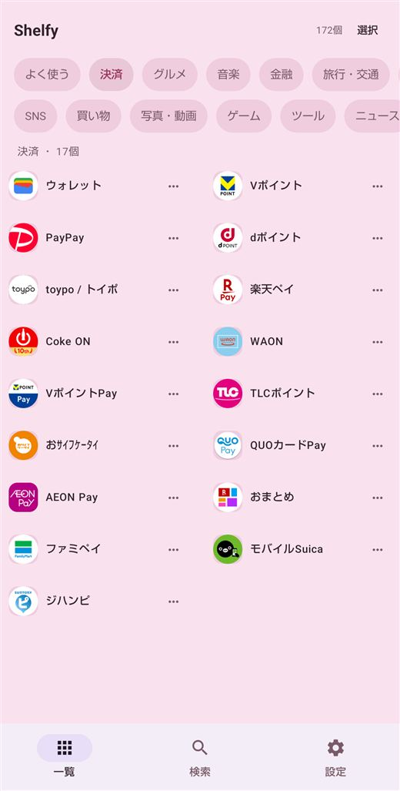
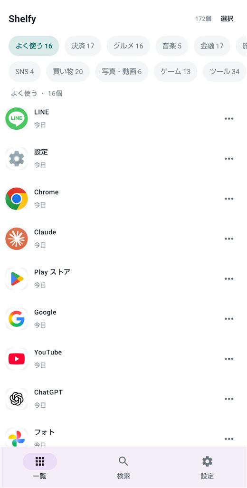
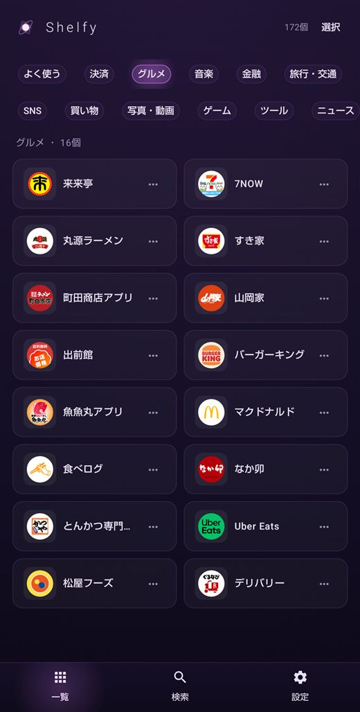
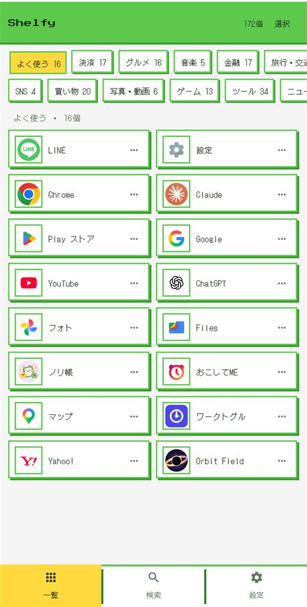
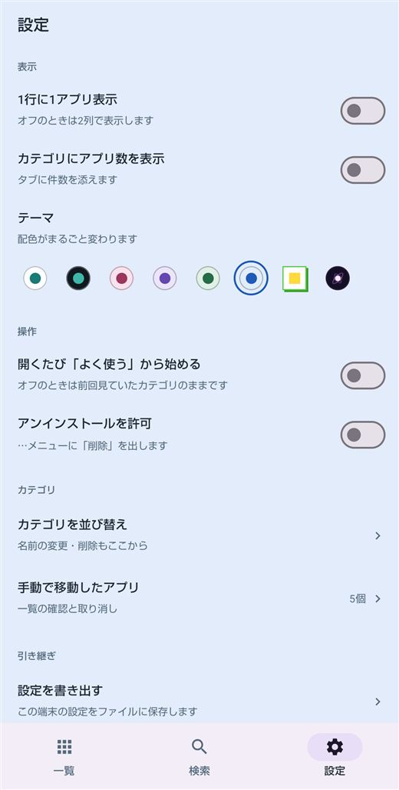
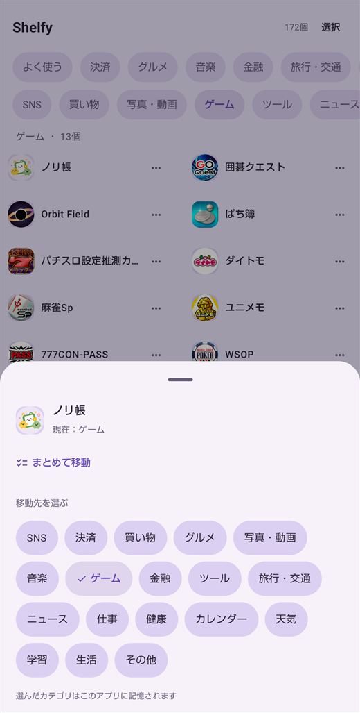

整理するのは Shelfy の中だけ。
ホーム画面には触れません
Shelfy はランチャーではありません。ホーム画面の配置、壁紙、ウィジェットは一切そのままです。
今の使い方を何ひとつ変えずに、アプリの探し方だけを増やせます。
いつものホーム画面はそこにあり、探すときだけ Shelfy を開く。それだけです。
無料でできること
自動の仕分けと検索は、購入しなくてもずっと無料で使えます。
- 自動で仕分け
SNS / 決済 / 買い物 / グルメ / 写真・動画 / 音楽 / ゲーム / 金融 / ツール / 旅行・交通 / ニュース / 仕事 / 健康 / カレンダー / 天気 / 学習 / 生活 の17カテゴリに自動で振り分けます。
- 「よく使う」タブ
直近2週間で実際に開いた回数をもとに並べます。最後に触った順ではなく、本当によく使うものが上に来ます。
- 検索
カテゴリをまたいで、名前の一部から探せます。
- 1行に1列/2列の表示切替え / カテゴリごとの件数表示
- ホワイトのテーマ
- 広告なし
Shelfy プレミアム
見た目を変えたい、仕分けを自分の手で直したい、という方に。
- 7つのテーマ
ブラック / ピンク / パープル / グリーン / ブルー / ドット / マグネター。色が変わるだけではありません。ドットとマグネターは枠・影・書体まで別物です。
- カテゴリを自分で作る
好きな名前のカテゴリを5つまで追加できます。並び替え・名前の変更・削除も、作ったあとから自由にできます。
- アプリを手動で移す
仕分けが気に入らないときは、別のカテゴリへ移せます。複数をまとめて移すことも、あとから元に戻すこともできます。
- 開くたび「よく使う」から始める
- アンインストールを許可
Android 標準の削除確認画面を Shelfy から開けるようになります。
- 機種変更しても、そのまま（Android 12 以降）
作ったカテゴリも、手で移したアプリも、新しい端末へそのまま引き継がれます。ファイルに書き出して控えを持っておくこともできます。Android 11 以前の端末へ移すときは、この書き出しをお使いください。
月額または年額のサブスクリプションです。いつでも解約できます。
購入しなくても、上の「無料でできること」はずっと使えます。


広告は表示しません
一覧に紛れ込む広告も、起動時に出る広告もありません。プレミアムでも無料でも、広告は表示しません。
権限について
使用状況へのアクセス
PACKAGE_USAGE_STATS
「よく使う」タブの並び順を決めるためだけに使います。許可しなくても、他のすべての機能は通常どおり使えます。
アプリ削除の要求
REQUEST_DELETE_PACKAGES
設定でオンにしたときだけ、Android 標準の削除確認画面を開きます。Shelfy がアプリを消すことはありません。
インターネット / ネットワーク状態の確認 / 課金
INTERNET · ACCESS_NETWORK_STATE · BILLING
サブスクリプションの購入と、購入済みかどうかの確認に使います。アプリの仕分けは端末の中だけで行います。インストール済みアプリの一覧を Shelfy が送信することはありません。
動作環境
- 対応
- Android 8.0 以降
- アカウント
- 不要。登録もログインもありません
- プレミアム
- 月額または年額。価格はお住まいの国の通貨で表示されます
- 言語
- 日本語 / English（端末の言語に合わせて切り替わります）
- 作者
- HY Studio